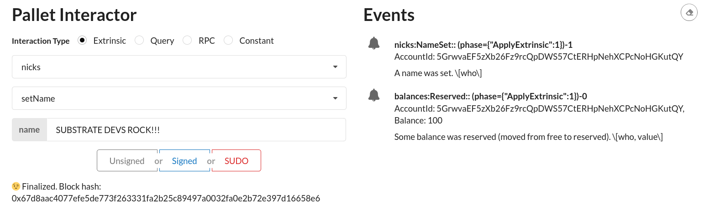
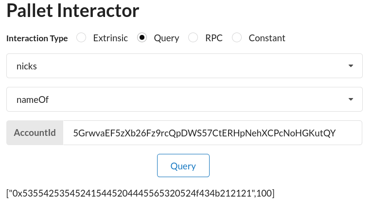
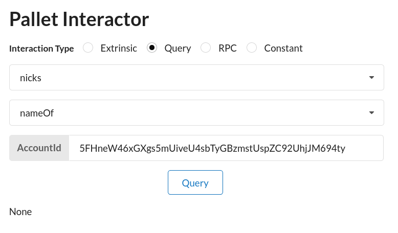

Add a simple pallet to the runtime
As you saw Build a local blockchain, the Substrate node template provides a working runtime that includes some default FRAME development modules—pallets—to get you started building a custom blockchain.
This tutorial introduces the basic steps for adding a new pallet to the runtime for the node template. The steps are similar any time you want to add a new FRAME pallet to the runtime. However, each pallet requires specific configuration settings—for example, the specific parameters and types required to perform the functions that the pallet implements. For this tutorial, you'll add the Nicks pallet to the runtime for the node template, so you'll see how to configure the settings that are specific to the Nicks pallet. The Nicks pallet allows blockchain users to pay a deposit to reserve a nickname for an account they control. It implements the following functions:
- The
set_namefunction to collect a deposit and set the name of an account if the name is not already taken. - The
clear_namefunction to remove the name associated with an account and return the deposit. - The
kill_namefunction to forcibly remove an account name without returning the deposit.
Note that this tutorial is a stepping stone to more advanced tutorials that illustrate how to add pallets with more complex configuration settings, how to create custom pallets, and how to publish pallets.
Before you begin
Before you begin, verify the following:
-
You have configured your environment for Substrate development by installing Rust and the Rust toolchain.
-
You have completed the Build a local blockchain tutorial and have the Substrate node template installed locally.
-
You are generally familiar with software development and using command-line interfaces.
-
You are generally familiar with blockchains and smart contract platforms.
Tutorial objectives
By completing this tutorial, you will use the Nicks pallet to accomplish the following objectives:
-
Learn how to update runtime dependencies to include a new pallet.
-
Learn how to configure a pallet-specific Rust trait.
-
See changes to the runtime by interacting with the new pallet using the front-end template.
Add the Nicks pallet dependencies
Before you can use a new pallet, you must add some information about it to the configuration file that the compiler uses to build the runtime binary.
For Rust programs, you use the Cargo.toml file to define the configuration settings and dependencies that determine what gets compiled in the resulting binary.
Because the Substrate runtime compiles to both a native Rust binary that includes standard library functions and a WebAssembly (Wasm) binary that does not include the standard library, the Cargo.toml file controls two important pieces of information:
- The pallets to be imported as dependencies for the runtime, including the location and version of the pallets to import.
- The features in each pallet that should be enabled when compiling the native Rust binary. By enabling the standard (
std) feature set from each pallet, you can compile the runtime to include functions, types, and primitives that would otherwise be missing when you build the WebAssembly binary.
For information about adding dependencies in Cargo.toml files, see Dependencies in the Cargo documentation.
For information about enabling and managing features from dependent packages, see Features in the Cargo documentation.
To add the dependencies for the Nicks pallet to the runtime:
-
Open a terminal shell and change to the root directory for the node template.
-
Open the
runtime/Cargo.tomlconfiguration file in a text editor. -
Import the
pallet-nickscrate to make it available to the node template runtime by adding it to the list of dependencies.toml [dependencies.pallet-nicks] default-features = false git = 'https://github.com/paritytech/substrate.git' tag = 'monthly-2021-10' version = '4.0.0-dev' -
The first line imports the
pallet-nickscrate as a dependency.- The second line specifies that the pallet features are not enabled by default when compiling the runtime.
- The third line specifies the repository location for retrieving the
pallet-nickscrate. - The fourth line specifies a commit tag using the
monthly-YYYY-MMnaming convention for retrieving the crate. - The fifth line specifies a version identifier for the crate.
-
Add the
pallet-nicks/stdfeatures to the list offeaturesto enable when compiling the runtime.toml [features] default = ['std'] std = [ ... 'pallet-aura/std', 'pallet-balances/std', 'pallet-nicks/std', # add this line ... ]This section specifies the default feature set to compile for this runtime is the
stdfeatures set. When the runtime is compiled using thestdfeature set, thestdfeatures from all of the pallets listed as dependencies are enabled. For more detailed information about how the runtime is compiled as a native Rust binary with the standard library and as a WebAssembly binary using theno_stdattribute, see Building the runtime.If you forget to update the
featuressection in theCargo.tomlfile, you might seecannot find functionerrors when you compile the runtime binary. -
Check that the new dependencies resolve correctly by running the following command:
bash
cargo check -p node-template-runtime
Review the configuration trait for the pallet
Every pallet has a Rust trait called Config. The Config trait is used to identify the parameters and types that the pallet needs to carry out its functions.
Most of the pallet-specific code required to add a pallet is implemented using the Config trait.
You can review what you to need to implement for any pallet by referring to its Rust documentation or the source code for the pallet.
For example, to see what you need to implement for the nicks pallet, you can refer to the Rust documentation for pallet_nicks::Config or the trait definition in the Nicks pallet source code.
For this tutorial, you can see that the Config trait in the nicks pallet declares the following types:
pub trait Config: frame_system::Config {
/// The overarching event type.
type Event: From<Event<Self>> + IsType<<Self as frame_system::Config>::Event>;
/// The currency trait.
type Currency: ReservableCurrency<Self::AccountId>;
/// Reservation fee.
#[pallet::constant]
type ReservationFee: Get<BalanceOf<Self>>;
/// What to do with slashed funds.
type Slashed: OnUnbalanced<NegativeImbalanceOf<Self>>;
/// The origin account that can forcibly set or remove a name. Root can always do this.
type ForceOrigin: EnsureOrigin<Self::Origin>;
/// The minimum length for a name.
#[pallet::constant]
type MinLength: Get<u32>;
/// The maximum length for a name.
#[pallet::constant]
type MaxLength: Get<u32>;
}
After you identify the types your pallet requires, you need to add code to the runtime to implement the Config trait.
To learn how to implement the Config trait for a pallet, you can use the Balances pallet—which is already implemented in the node template runtime—as an example.
To review the Config trait for the Balances pallet:
-
Open the
runtime/src/lib.rsfile in a text editor. -
Locate the
Balancespallet section. -
Note that the implementation for the
Balancespallet consists of two parts: -
The
parameter_types!block where constant values are defined.
rust
parameter_types! {
// The u128 constant value 500 is aliased to a type named ExistentialDeposit.
pub const ExistentialDeposit: u128 = 500;
// A heuristic that is used for weight estimation.
pub const MaxLocks: u32 = 50;
}
- The
implblock where the types and values defined by theConfiginterface are configured.
rust
impl pallet_balances::Config for Runtime {
// The previously defined parameter_type is used as a configuration parameter.
type MaxLocks = MaxLocks;
// The "Balance" that appears after the equal sign is an alias for the u128 type.
type Balance = Balance;
// The empty value, (), is used to specify a no-op callback function.
type DustRemoval = ();
// The previously defined parameter_type is used as a configuration parameter.
type ExistentialDeposit = ExistentialDeposit;
// The FRAME runtime system is used to track the accounts that hold balances.
type AccountStore = System;
// Weight information is supplied to the Balances pallet by the node template runtime.
// type WeightInfo = (); // old way
type WeightInfo = pallet_balances::weights::SubstrateWeight<Runtime>;
// The ubiquitous event type.
type Event = Event;
}
As you can see in this example, the impl pallet_balances::Config block allows you to configure the types and parameters that are specified by the Balances pallet Config trait.
For example, this impl block configures the Balances pallet to use the u128 type to track balances.
Implement the Config trait for the pallet
Now that you have seen an example of how the Config trait is implemented for the Balances pallet, you're ready to implement the Config trait for the Nicks pallet.
To implement the nicks pallet in your runtime:
-
Open the
runtime/src/lib.rsfile in a text editor. -
Locate the last line of the Balances code block.
-
Add the following code block for the Nicks pallet:
```rust /// Add this code block to your template for Nicks: parameter_types! { // Choose a fee that incentivizes desireable behavior. pub const NickReservationFee: u128 = 100; pub const MinNickLength: u32 = 8; // Maximum bounds on storage are important to secure your chain. pub const MaxNickLength: u32 = 32; }
impl pallet_nicks::Config for Runtime {
// The Balances pallet implements the ReservableCurrency trait.
// Balances is defined in construct_runtime! macro. See below.
// https://docs.substrate.io/rustdocs/latest/pallet_balances/index.html#implementations-2
type Currency = Balances;
// Use the NickReservationFee from the parameter_types block.
type ReservationFee = NickReservationFee;
// No action is taken when deposits are forfeited.
type Slashed = ();
// Configure the FRAME System Root origin as the Nick pallet admin.
// https://docs.substrate.io/rustdocs/latest/frame_system/enum.RawOrigin.html#variant.Root
type ForceOrigin = frame_system::EnsureRoot<AccountId>;
// Use the MinNickLength from the parameter_types block.
type MinLength = MinNickLength;
// Use the MaxNickLength from the parameter_types block.
type MaxLength = MaxNickLength;
// The ubiquitous event type.
type Event = Event;
} ```
- Identify the types that the Nicks pallet exposes.
You can find a complete list of types in the construct_runtime! macro documentation.
The Nicks pallet uses the following types:
- Storage because it uses the
#[pallet::storage]macro. - Event because it uses the
#[pallet::events]macro. In thenickspallet, theEventkeyword is parameterized with respect to a type because at least one of the events defined by the Nicks pallet depends on a type that is configured with theConfigconfiguration trait. - Call because it has dispatchable functions in the
#[pallet::call]macro. -
Pallet because it uses the
#[pallet::pallet]macro. -
Add Nicks to the
construct_runtime!macro.
For example:
```rust
construct_runtime!(
pub enum Runtime where
Block = Block,
NodeBlock = opaque::Block,
UncheckedExtrinsic = UncheckedExtrinsic
{
/ --snip-- /
Balances: pallet_balances::{Pallet, Call, Storage, Config
/*** Add This Line ***/
Nicks: pallet_nicks::{Pallet, Call, Storage, Event<T>},
}
); ```
- Check that the new dependencies resolve correctly by running the following command:
bash
cargo check -p node-template-runtime
If there are no errors, you are ready to compile.
- Compile the node in release mode by running the following command:
bash
cargo build --release
Start the blockchain node
After your node compiles, you are ready to start the node that has been enhanced with nickname capabilities from the Nicks pallet and interact with it using the front-end template.
To start the local Substrate node:
-
Open a terminal shell, if necessary.
-
Change to the root directory of the Substrate node template.
-
Start the node in development mode by running the following command:
./target/release/node-template --dev
In this case, the --dev option specifies that the node runs in developer mode using the predefined development chain specification.
By default, this option also deletes all active data—such as keys, the blockchain database, and networking information—when you stop the node by pressing Control-c.
Using the --dev option ensures that you have a clean working state any time you stop and restart the node.
- Verify your node is up and running successfully by reviewing the output displayed in the terminal.
If the number after finalized is increasing in the console output, your blockchain is producing new blocks and reaching consensus about the state they describe.
- Keep the terminal that displays the node output open to continue.
Start the front-end template
Now that you have added a new pallet to your runtime, you can use the Substrate front-end template to interact with the node template and access the Nicks pallet.
To start the front-end template:
-
Open a new terminal shell on your computer.
-
In the new terminal, change to the root directory where you installed the front-end template.
-
Start the web server for the front-end template by running the following command:
bash
yarn start
- Open http://localhost:8000/ in a browser to view the front-end template.
Set a nickname using the Nicks pallet
After you start the front-end template, you can use it to interact with the Nicks pallet you just added to the runtime.
To set a nickname for an account:
-
Check the account selection list to verify that the Alice account is currently selected.
-
In the Pallet Interactor component, verify that Extrinsic is selected.
-
Select
nicksfrom the list of pallets available to call. -
Select the
setNamedispatchable as the function to call from thenickspallet. -
Type a name that is longer than the
MinNickLength(8 characters) and no longer than theMaxNickLength(32 characters). -
Click
Signedto execute the function.

- Observe the status of the call and the events emitted by the Nicks pallet.
Query information for an account using the Nicks pallet
Next, you can use Query capability to read the value of Alice's nickname from the runtime storage for the Nicks pallet.
To return the information stored for Alice:
-
In the Pallet Interactor component, select Query.
-
Select
nicksfrom the list of pallets available to query. -
Select the
nameOf. -
Copy and paste the address for the
aliceaccount in the Account field, then click Query.

The return type is a tuple that contains two values:
-
The hex-encoded nickname for the Alice account.
-
The amount that was reserved from Alice's account to secure the nickname.
If you were to query the Nicks pallet for the nameOf for Bob's account, you would see the None value returned because Bob has not invoked the setName function to reserve a nickname.

Explore additional functions
This tutorial illustrates how to add a simple pallet to the runtime and demonstrates how to interact with the new pallet using the front-end template.
In this case, you added the nicks pallet to the runtime and called the set_name function using the front-end template.
The nicks pallet also provides two additional functions—the clear_name function and the kill_name function—that enable an account owner to remove the reserved name or a root-level user to forcibly remove an account name.
You can learn about additional features—such as the use of the Sudo pallet and origin accounts—by exploring how these functions work.
However, these features are beyond the intended scope of this tutorial.
If you want to explore additional features exposed through the Nicks and Sudo pallets, see Next steps and select Specify the origin for invoking a function.
Next steps
There are several tutorials that can serve as next steps for learning more about Substrate development.
- Specify the origin for invoking a function explores calling functions using different originating accounts.
- Configure the contracts pallet demonstrates more complex configuration requirements by adding the Contracts pallet to the runtime.
- Create a custom pallet using macros
References
- Basic Example Pallet provides detailed comments about what you can access within FRAME.
- The Cargo book introduces the Cargo package manager, including reference information for Cargo features and commands.
- Rust and WebAssembly Documentation highlights several resources for learning about Rust and WebAssembly.